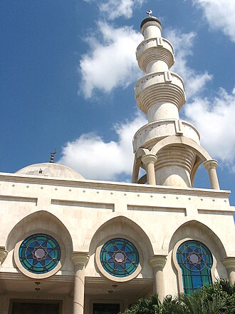

Voorstelling
La mosquée Omar Ibn Al-khattaab est une mosquée située à Maicao, département de La Guajira, en Colombie.
مسجد عمر بن الخطاب ثاني أكبر مسجد في أمريكا الاتينية يقع في مايكاو في كولومبيا.
The Mosque of Omar Ibn Al-Khattab is a mosque in Maicao, La Guajira, Colombia. It is the third largest mosque in Latin America. It is locally known as "La Mezquita", simply because it is the only mosque in the region. Along with the Dar Alarkan School, they are the centers for the Islamic faith and culture in the region.
Ömer bin Hattab Camii, Kolombiya'nın Maicao kentinde bulunan bir camidir. Cami, 17 Eylül 1997 tarihinde inşa edilmiş olup Latin Amerika'nın üçüncü büyük camisidir. Adını ikinci İslam halifesi Ömer bin Hattab'dan almaktadır.
Masjid Omar Ibn Al-Khattab di Maicao, La Guajira, Kolombia merupakan masjid terbesar kedua di Amerika Latin. Warga lokal menyebutnya "La Mezquita" ("Masjid") karena merupakan satu-satunya di daerah itu, dan bersama Sekolah Dar Alarkan, keduanya adalah pusat agama Islam di daerah itu. Dibangun bulan September 1997 dan diberi nama setelah kalifah Sunni kedua Omar Ibn Al-Khattab, dan dapat menampung 1.000 jamaah.
مسجد عمر بن خطاب لاطینی امریکا کی دوسری سب سے بڑی مسجد ہے، جو کولمبیا کے شہر مائیکاو میں واقع ہے۔
Die Moschee Omar Ibn Al-Jattab ist ein islamisches Gebetshaus in Maicao, im kolumbianischen Departamento La Guajira. Sie ist einfach als La Mezquita bekannt, da sie die einzige in der Region ist.
La mezquita de Omar Ibn Al-Jattab en Maicao, La Guajira (Colombia), es una de las mezquitas más grandes de Iberoamérica, inaugurada el 17 de septiembre de 1997 con un minarete de 31 m de altura. Lleva el nombre de Umar ibn al-Jattab, el segundo califa del islam. Conocida simplemente como “La Mezquita” es, junto al adjunto Colegio Dar el Arkam, uno de los principales centros culturales de la comunidad musulmana en el país. Fue diseñada por el arquitecto venezolano de origen iraní Alí Namazi Borhan (1953-2008) y levantada por el ingeniero civil Oswaldo Vizcaíno Fontalvo, quien utilizó mármol italiano para su construcción.
La moschea di ʿUmar ibn al-Khaṭṭāb è una moschea situata a Maicao, nel dipartimento de La Guajira, in Colombia.
欧麦尔·本·赫塔卜清真寺 是哥伦比亚瓜希拉省迈考的一座清真寺，是拉丁美洲第三大清真寺。它在当地通常直接被称为“La Mezquita”（清真寺），因为它是该地区唯一的清真寺。与达尔卡学校 一起，是该地区伊斯兰信仰和文化的中心。这座清真寺建于1997年9月17日，以第二代逊尼派哈里发欧麦尔·本·赫塔卜的名字命名。清真寺由伊朗建筑师阿里·纳马齐 设计，由土木工程师奥斯瓦尔多·比斯凯诺·方塔尔沃 建造，建筑材料使用意大利大理石。它能轻易容纳1000多人。
Мечеть Умара ибн аль-Хаттаба — мечеть в Майкао (Колумбии), вторая по величине мечеть в Латинской Америке.
Nhà thờ Hồi giáo Omar Ibn Al-Khattab là một nhà thờ Hồi giáo tại Maicao, La Guajira, Colombia. Nó là nhà thờ Hồi giáo lớn thứ ba tại châu Mỹ Latinh. Dân địa phương gọi nó là "La Mezquita", đơn giản vì nó là nhà thờ Hồi giáo duy nhất trong vùng. Cùng với trường Dar Alarkan, nhà thờ Hồi giáo này tạo nên một trung tâm văn hóa và tín ngưỡng đạo Hồi cho vùng. Ngôi nhà thờ Hồi giáo này được xây vào ngày 17 tháng 9 năm 1997, theo tên vua Hồi Sunni thứ hai Omar Ibn Al-Khattab. Nó có thể dễ dàng chứa hơn 1,000 người.
Op de kaart
Documenten en links
- Wikipédia — Français
- Wikipédia — العربية
- Wikipédia — English
- Wikipédia — Türkçe
- Wikipédia — Bahasa Indonesia
- Wikipédia — اردو
- Wikipédia — Deutsch
- Wikipédia — Español
- Wikipédia — Italiano
- Wikipédia — 中文
- Wikipédia — Русский
- Wikipédia — Tiếng Việt
- Wikidata — Q3091562
Gegevens: Wikidata (CC0), elke 3 maanden bijgewerkt. Het jaar is de oudst bekende bouwdatum van het gebouw: voor een gebouw dat later een moskee werd (zoals de Hagia Sophia), is het die van het oorspronkelijke gebouw. Foto's: Wikimedia Commons, maker en licentie op de pagina van elke foto.